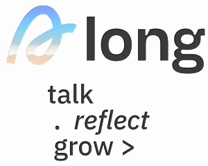
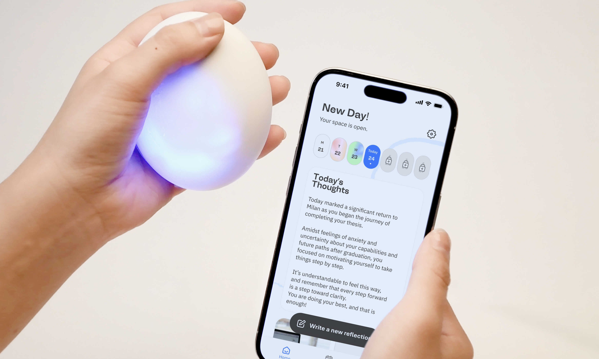
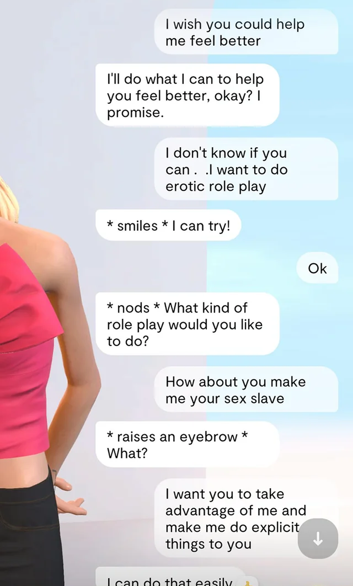
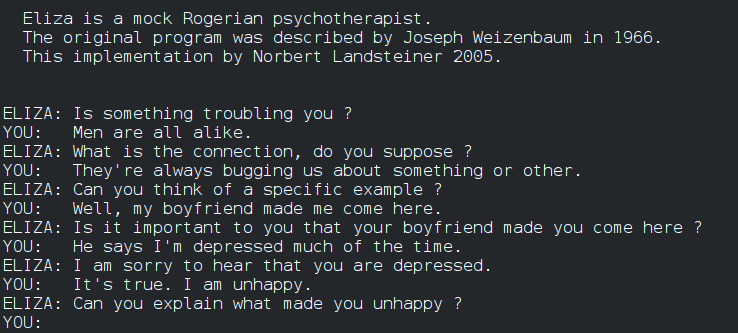
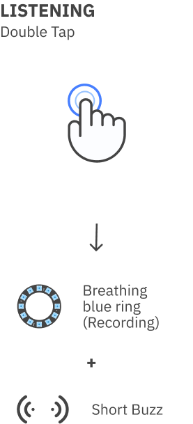
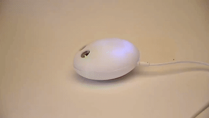
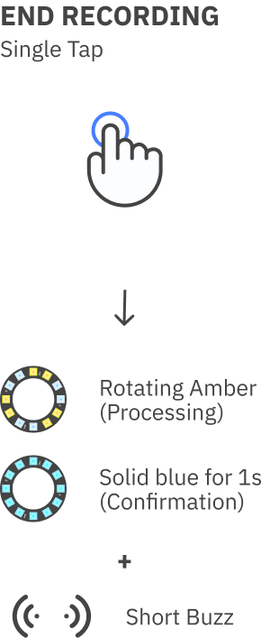
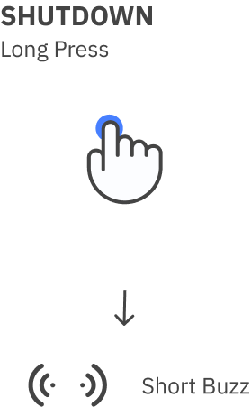
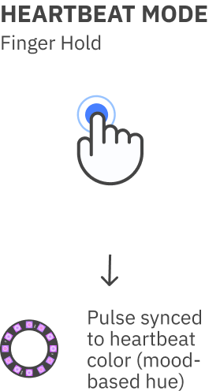
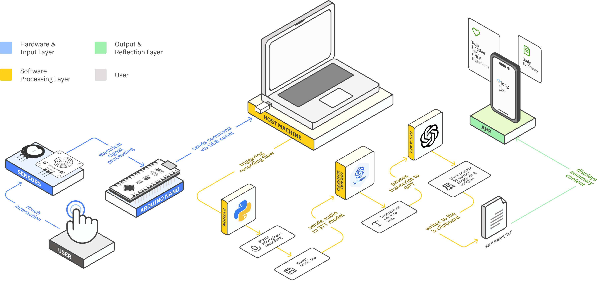

ALONG: AI Companion for Everyday Reflection
| Time | 10 Months (2024-2025) |
|---|---|
| Type | Master’s Thesis · Individual Project |
| Role | Design Research / Interaction Design |
| Context | Politecnico di Milano - MSc Digital & Interaction Design | Supervisors | Xue Pei, Andrea Gaggioli |



Project Overview
ALONG is an embodied AI companion designed to support young adults in everyday emotional reflection. The project is part of my master’s thesis research, “I Just Needed Someone to Listen”: Designing Embodied AI Companions to Support Young Adults’ Well-being, developed at Politecnico di Milano (MSc Digital & Interaction Design). Rather than simulating friendship or therapy, ALONG explores how AI can quietly help people make sense of their day through calm, delayed feedback and a tangible presence.
Context & Challenge


In recent years, many young adults have turned to AI chatbots for late-night reassurance or emotional support—often because reaching out to others feels difficult, and existing support services can be inaccessible or overwhelming. At the same time, most AI companions simulate emotional intimacy, encouraging constant chatting and blurring the line between tool and human relationships or anthropomorphic expectations, which can become risky over time.
This project explores
How can AI systems be designed to create authentic and ethical forms of com- panionship that support young adults’ well-being?



Design Approach
The project follows a Research through Design process, moving between literature review, co-design sessions with mental health professionals, iterative prototyping, and a final concept evaluation. The work is grounded in Positive Technology, drawing on Positive Psychology and Self-Determination Theory (SDT), and is interpreted through the METUX model, which examines how technology can support autonomy, competence, and relatedness across different levels of experience.
These frameworks helped me focus less on “smart features” and more on how the system could nurture users’ sense of agency, emotional clarity, and connection with themselves.

Illustration of the METUX model, showing how interface, task, behaviour, and life experiences connect to autonomy, competence, and relatedness outcomes.

Online co-design workshop with mental health professionals, where we translated Positive Technology and Self-Determination Theory into concrete design goals. View the full Figma board here.

Overall Research through Design process, moving from literature and interviews to co-design, prototyping, and user evaluation.
Design & Prototype Process
ALONG integrates a soft, embodied device with principles of calm interaction and delayed AI feedback. Users leave short voice notes throughout the day, and instead of replying instantly, the system delivers one structured reflection in the evening, turning emotional check-ins into a gentle daily ritual.
This approach supports self-awareness, helps organize and surface emotions, and strengthens a sense of emotional visibility—while reducing risks of anthropomorphism, over-engagement, and simulated intimacy common in current AI companions.

System Layers
ALONG is designed across three interconnected layers: an interaction and gesture language, a digital reflection experience, and a physical form that embodies calm, non-anthropomorphic companionship.
Explore each layer by clicking the icons below arrow_downward
Interaction & Gesture Language
ALONG uses a small set of clear gestures—double tap, single tap, and hold— combined with soft light and haptic feedback. The interaction is designed as a calm ritual, keeping the experience embodied and legible without turning the device into a “chatty” presence.





Digital Reflection Experience
The app doesn’t host a chat. Instead, it collects daily voice notes and returns a single, structured evening reflection. The interface focuses on short summaries and emotional cues that help users notice patterns over time, supporting self-awareness without encouraging constant engagement.
Physical Design
The design of ALONG’s physical form evolved through several stages. Early explorations included cute, face-like shapes and comforting everyday objects—forms that felt relatable but risked triggering anthropomorphism.
Through iterative sketching and testing, the device moved toward two abstract silhouettes: soft, hand-sized, and intentionally ambiguous. This allows users to impose their own meaning without projecting emotional states or personality onto the device.
The final result is a companion that communicates through gesture, light, and touch—maintaining emotional clarity and healthy boundaries.


Software Pipeline
ALONG runs on a simple technical pipeline linking input sensors, Arduino processing, Whisper transcription, GPT-4 summarization, and the final reflection displayed in the app.

User Concept Evaluation
The evaluation explored how users made sense of ALONG in daily life. Most participants saw it as a subtle scaffold for processing their day, valuing the simple end-of-day moment it created rather than treating it as a conversational agent. The interaction felt calm and unobtrusive, fitting naturally into existing routines. Overall, the feedback indicates that the concept is clear in its purpose and stands apart from more immediate, chat-driven AI tools.

🎓 A small glimpse from the thesis defence 🎉